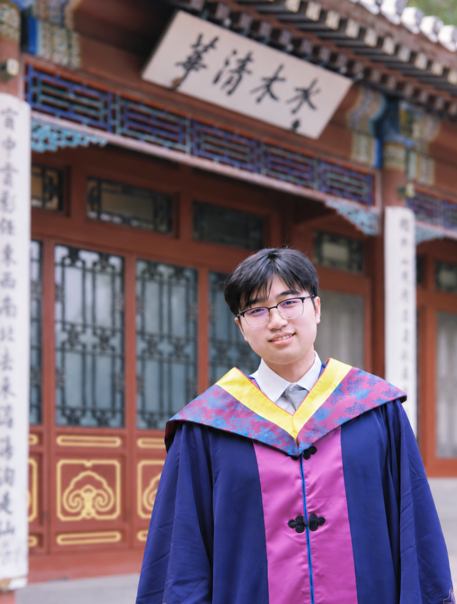

Hanyu Cheng 程瀚语

About Me
I received my B.E. in Industrial Engineering from Tsinghua University in 2026. I will join the Department of Industrial Engineering and Operations Research (IEOR) at Columbia University as a Staff Associate in Fall 2026, before beginning my Ph.D. in the H. Milton Stewart School of Industrial and Systems Engineering (ISyE) at Georgia Tech in Spring 2027.
My research interests lie in logistics and transportation systems, with two main methodological areas:
- Stochastic control;
- Game theory.
My current research focuses on the stochastic control of non-stationary inventory-queueing systems, in collaboration with Prof. David D. Yao at Columbia University.
Research
For the papers listed below, 1 indicates equal contribution.
Working Papers
- Optimal Control of a Non-Stationary Inventory-Queue, with Applications to EV-Battery Swapping
- A Markovian Traffic Equilibrium Model for Ride-Hailing Major revision at Transportation Science.
Publications
- Optimizing Urban Electric Vehicle Charging and Battery Swapping Infrastructure: A Location-Inventory-Grid Model Transportation Research Part E: Logistics and Transportation Review, 2026.
- Dynamic Carbon Intensity Indicator (CII) Management in Stochastic Tramp Shipping Market Transportation Research Part A: Policy and Practice, 2026.
Conference Proceedings
- Adding Runs of Modular Autonomous Vehicles with Skip-Stop Strategy Using Deep Reinforcement Learning 2025 IEEE 28th International Conference on Intelligent Transportation Systems (ITSC), 2025.
Awards
Pre-doctoral Awards
- Innovation Excellence Scholarship, Tsinghua University, 2025
- Innovation Excellence Scholarship, Tsinghua University, 2024
- Comprehensive Excellence Scholarship, Tsinghua University, 2023
- Comprehensive Excellence Scholarship, Tsinghua University, 2022
- Outstanding Student Leader, Tsinghua University, 2022
Experiences
Education
- Ph.D. Student in Industrial Engineering, Georgia Tech, starting Jan. 2027
- B.Eng. in Industrial Engineering, Tsinghua University, Sep. 2021 - Jul. 2026
Research Experience
- Staff Associate, Columbia University, Nov. 2026 - Jan. 2027
- Visiting Student Intern (VSI), Columbia University, Mar. 2026 - May 2026
- Visiting Student Researcher (VSR), UC Berkeley, Jul. 2025 - Sep. 2025